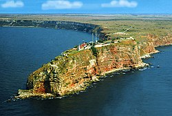

Археологически резерват - Калиакра
 „Калиакра“ е природен и археологически резерват. Заема площ от 687,5 дка и включва диви степи и уникални крайбрежни скали. Растителният свят наброява повече от 400 вида. На територията на Калиакра са установени общо 310 вида птици, за 100 от които се изискват специални мерки за опазване на техните местообитания. От срещащите се видове 106 са от европейско природозащитно значение.
Нос Калиакра и намиращият се на негова територия археологически резерват се намират на 12 km югоизточно от град Каварна. Представлява удължен и стесняващ се скалист полуостров, вдаден на около 2 km навътре в морето. Това е едно от най-атрактивните за туристите място по Черноморието заради богатата история, запазената природа и красивите панорамни гледки.
В една от пещерите на нос Калиакра е уреден музей, където могат да се видят много археологически находки, открити при разкопки в резервата. Сред най-атрактивните експонати е макет на древната крепост, който демонстрира как е изглеждала в миналото.
Предложения за хотели в Резерват Калиакра.